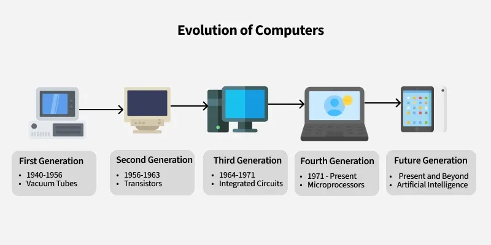

👋 Selamat Datang!
Pernahkah Anda berpikir bagaimana sebuah chip silikon seukuran kuku bisa memiliki kekuatan miliaran kali lipat lebih besar dari komputer pertama yang memenuhi satu ruangan? Bagaimana perintah yang Anda ketik bisa dipahami dan dieksekusi dalam sepersekian detik?

Situs ini akan membawa Anda menelusuri perjalanan luar biasa tersebut. Dari sakelar mekanis sederhana hingga arsitektur multi-core yang kompleks, kita akan membongkar rahasia di balik otak setiap perangkat digital yang kita gunakan saat ini.
🗺️ Apa yang Akan Anda Pelajari?
Jelajahi setiap era evolusi komputasi melalui halaman-halaman berikut:
- Sejarah Awal: Pelajari fondasi logika Boolean, era komputer mekanis, hingga penemuan transistor yang mengubah segalanya.
- Era Mikroprosesor: Saksikan kelahiran CPU dalam satu chip, ikuti evolusi Intel x86, dan pahami teknik-teknik cerdas untuk mengejar kinerja.
- Arsitektur Modern: Temukan alasan di balik pergeseran ke multi-core, peran krusial cache, dan bagaimana semua komponen saling terhubung.
- Latihan & Kuis: Uji dan perdalam pemahaman Anda dengan soal-soal interaktif, kuis, dan fakta menarik.
1.0 Pendahuluan: Mendefinisikan Arsitektur dan Organisasi
Untuk memulai perjalanan ini, penting untuk membedakan dua konsep fundamental: arsitektur dan organisasi komputer.
Konsep Arsitektur vs. Organisasi
- Arsitektur Komputer: Atribut sistem yang terlihat oleh programmer (set instruksi, tipe data). Ini adalah 'APA' yang dilakukan sistem.
- Organisasi Komputer: Unit operasional dan interkoneksinya yang merealisasikan arsitektur (sinyal kontrol, teknologi memori). Ini adalah 'BAGAIMANA' sistem melakukannya.
Pemisahan ini sangat krusial, memungkinkan inovasi hardware (organisasi) tanpa mengubah software yang bergantung pada arsitektur yang stabil.